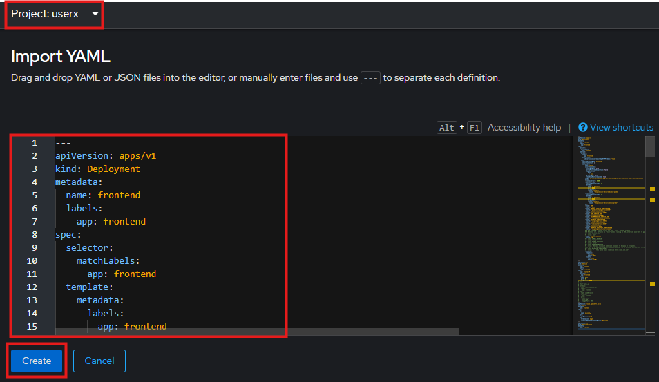

Third Hands-On Lab
Hands-On Labs
In this Hands-On-Labs, we deploy an e-commerce application, which is based on the Online Boutique, provided by Google Cloud Platform.
The deployment manifests are modified so that they could be deployed on an OpenShift Cluster. The User Interface of "Online Boutique" looks like this:

Architecture
On the main page of the Online Boutique, a frontend service forwards the requests to the 10 corresponding backend services, as shown in this architectur image:

All these 11 microservices are communicating over gRPC protocol.
Microservices
These 11 microservices are written in different programming languages and are responsible for a specific task in this e-commerce website:
| Service | Language | Description |
|---|---|---|
| frontend | Go | Exposes an HTTP server to serve the website. Does not require signup/login and generates session IDs for all users automatically. |
| cartservice | C# | Stores the items in the user's shopping cart in Redis and retrieves it. |
| productcatalogservice | Go | Provides the list of products from a JSON file and ability to search products and get individual products. |
| currencyservice | Node.js | Converts one money amount to another currency. Uses real values fetched from European Central Bank. It's the highest QPS service. |
| paymentservice | Node.js | Charges the given credit card info (mock) with the given amount and returns a transaction ID. |
| shippingservice | Go | Gives shipping cost estimates based on the shopping cart. Ships items to the given address (mock) |
| emailservice | Python | Sends users an order confirmation email (mock). |
| checkoutservice | Go | Retrieves user cart, prepares order and orchestrates the payment, shipping and the email notification. |
| recommendationservice | Python | Recommends other products based on what's given in the cart. |
| adservice | Java | Provides text ads based on given context words. |
| loadgenerator | Python/Locust | Continuously sends requests imitating realistic user shopping flows to the frontend. |
Prerequisites
Ensure that you have access to a OpenShift Cluster to deploy the manifests for the e-commerce application.
Note
If you do not already have access to a Demo Cluster, ask your training instructor! Or create a Demo Cluster by yourself via the following link: Red Hat Demo Cluster
Tutorial Instructions
We will deploy step by step the manifests in this directory from the OpenShift Console.
Login to OpenShift cluster using the provided credentials, create a new project and set the project's name as your provided user (for example "userX"):
Frontend Deployment
Now, we will add frontend resources by going to the +Add page:
and import the corresponding yaml files, that we cloned from the repository earlier, in Import YAML:
In Import YAML, make sure that you are in the right project (i.e. userx) and then click on Create:

After some seconds or minutes, it shows that the resources for frontend service are successfully deployed:

Now, we go to Topology page and click on the arrow at the top right corner to open up the web application in a browser:

Wait a moment! We did everything correct but still there is an Error and the website is not properly loaded:

That is because frontend is only the shell of this microservice application and all the backend services are not deployed yet!
Deploy Backend Services
At this stage, we will follow the steps described before to add resources for these backend services
- adservice.yaml
- cartservice
- checkoutservice.yaml
- currencyservice.yaml
- loadgenerator.yaml
- productionservice.yaml
- recommendationservice.yaml
- shippingservice.yaml
by importing YAML files from the cloned repo into the same project (i.e. userx) on the cluster and wait some minutes for them to be successfully deployed.
YUHU! All part of the puzzle are in running state! But someting is not right! Why are the recommendations and Advertisement not shown!
Please compare the website with the link you recieve during the workshop!
Tipp: Look into the ports configured in the frontend deployment!
After troubleshooting and connecting properly the recommendations and Advertisement services, we go further with add two more services to the application: payment & email
Deploy Services Payment and Email from Terminal
In order to open up a terminal, click on the "icon" at top right corner of the console, as shown in the image:
Then start a terminal in the window that pops up at the bottom of the page:
That should start a workspace pod in your project and provide you with a shell.
First, we clone the repositorykubernetes-training:

Go to the "kubernetes-training/e-commerce" directory and run below commands:
- deploy email service:
- Deploy payment service:
Now, it is time to make some money from our website!